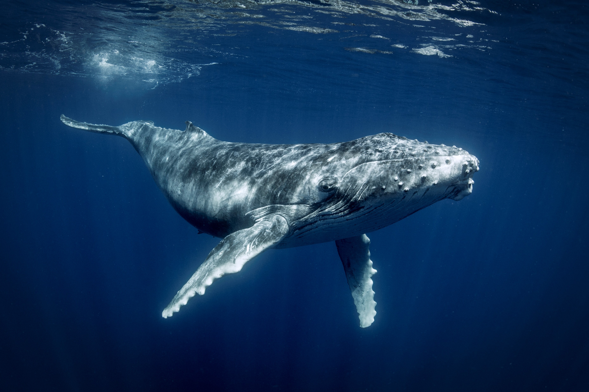
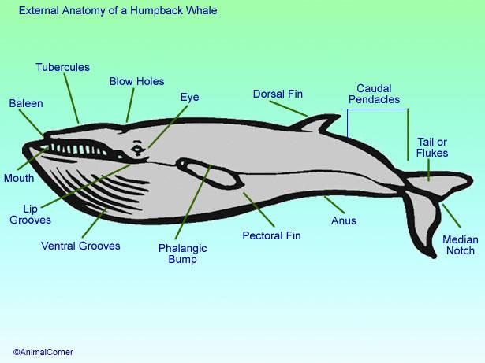
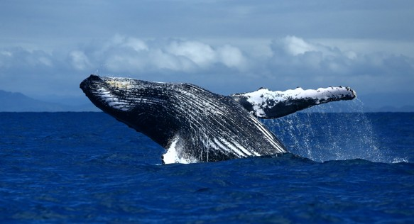

Humpback whales are among the most majestic marine mammals on Earth. Famous for their haunting songs, massive migrations, and spectacular breaching behavior, humpback whales travel across thousands of kilometers through the world’s oceans.
These gentle giants play an important role in maintaining healthy marine ecosystems and are one of the most recognized whale species in wildlife documentaries.
Humpback whales possess enormous pectoral fins, powerful tails called flukes, thick blubber layers, and baleen plates used for filter feeding.


Humpback whales inhabit oceans around the world. They migrate between cold feeding waters and warmer tropical breeding regions every year.
Global humpback whale populations have recovered significantly since commercial whaling bans, although some populations remain vulnerable.
International conservation laws and marine protected areas help safeguard humpback whale populations from commercial hunting and environmental threats.
| Feature | Information |
|---|---|
| Scientific Name | Megaptera novaeangliae |
| Average Lifespan | 45–100 years |
| Length | 12–16 meters |
| Weight | 25–40 tons |
| Diet | Krill and small fish |